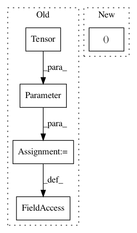

9ea14875825b2ab63a43ad2f0f5159d99df86d02,model.py,Lookahead,__init__,#Lookahead#Any#Any#,108
Before Change
// should we handle batch_first=True?
super(Lookahead, self).__init__()
self.n_features = n_features
self.weight = Parameter(torch.Tensor(n_features, context + 1))
assert context > 0
self.context = context
self.register_parameter("bias", None)
self.init_parameters()
After Change
assert context > 0
self.context = context
self.n_features = n_features
self.pad = (0, self.context - 1)
self.conv = nn.Conv1d(self.n_features, self.n_features, kernel_size=self.context, stride=1,
groups=self.n_features, padding=0, bias=None)
def forward(self, x):
In pattern: SUPERPATTERN
Frequency: 3
Non-data size: 5
Instances
Project Name: SeanNaren/deepspeech.pytorch
Commit Name: 9ea14875825b2ab63a43ad2f0f5159d99df86d02
Time: 2019-07-29
Author: rasmus.arpe@gmail.com
File Name: model.py
Class Name: Lookahead
Method Name: __init__
Project Name: dpressel/mead-baseline
Commit Name: fe75ff5280f1c57e732a6fa0b3e048e9bcef8abd
Time: 2018-05-31
Author: blester125@users.noreply.github.com
File Name: python/baseline/pytorch/tagger/model.py
Class Name: RNNTaggerModel
Method Name: create
Project Name: rusty1s/pytorch_geometric
Commit Name: e60669c5aa467d5c11a508c01b37c4ed8e352fa6
Time: 2021-02-15
Author: matthias.fey@tu-dortmund.de
File Name: torch_geometric/nn/conv/supergat_conv.py
Class Name: SuperGATConv
Method Name: __init__